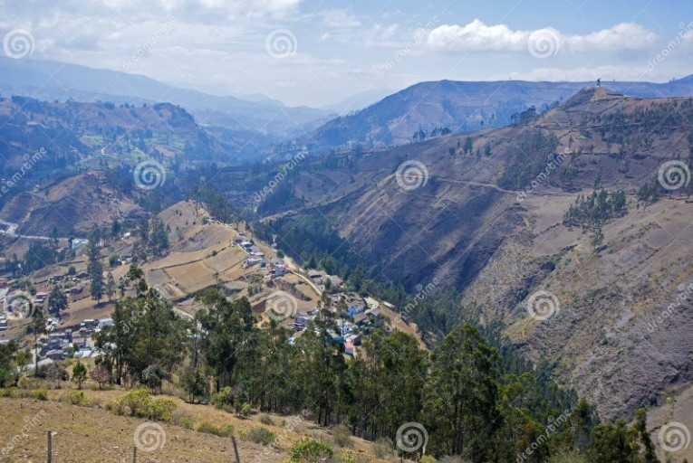

Guaranda se encuentra en el centro del Ecuador, en la región interandina, y es la capital
de la provincia de Bolívar. Gracias a su ubicación estratégica entre las ciudades de
Quito, Guayaquil y Ambato, sirve como un importante punto de conexión entre la Sierra
y la Costa. Está rodeada de colinas y montañas, y destaca por su clima templado y su ambiente tranquilo.
| Ciudad de Guaranda | |
|---|---|
| Extensión geográfica | Aprox. 12 km² |
| Población total | 30.755 habitantes |
| Hombres | 15.000 |
| Mujeres | 15.755 |
| Niños (menores de 15 años) | 7.000 |
| Clima | 4º C a 7º C hasta subtropical cálido 18º C a 24º C. |
|
El territorio guarandeño es predominantemente montañoso, con colinas suaves y cerros |
 |